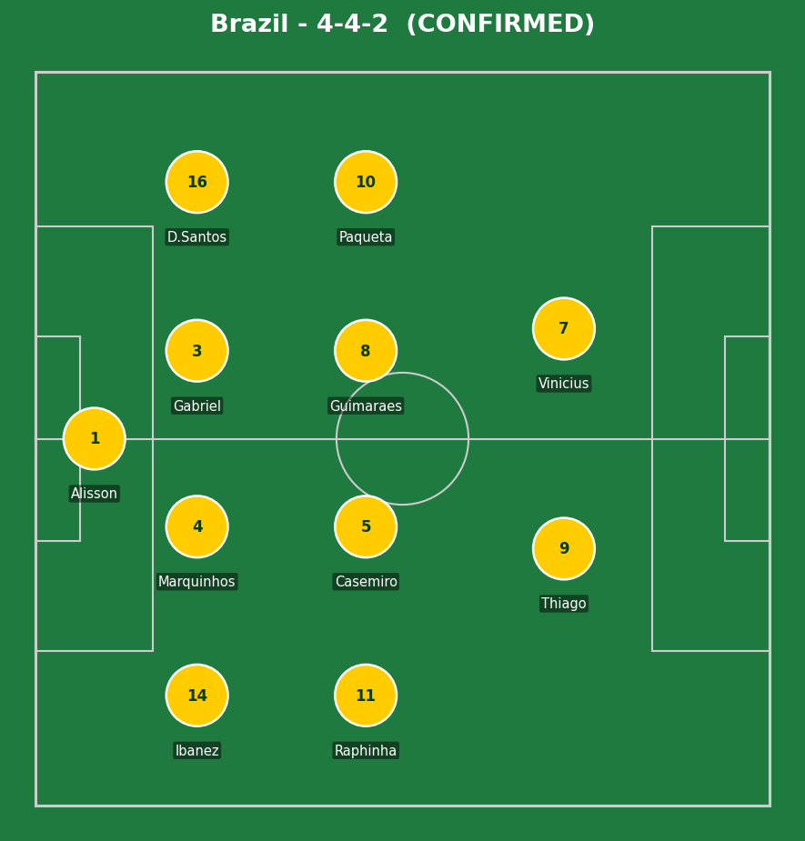
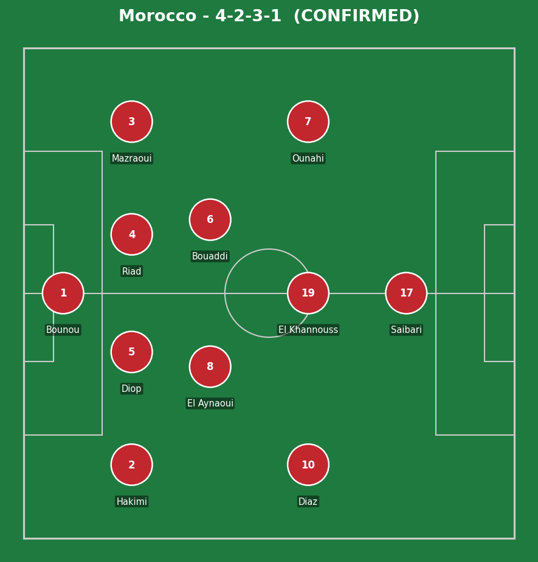
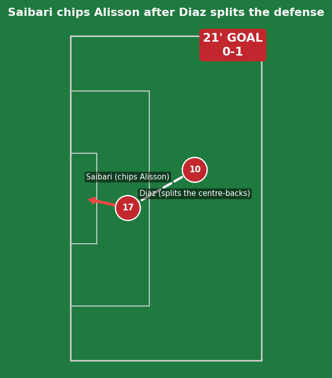
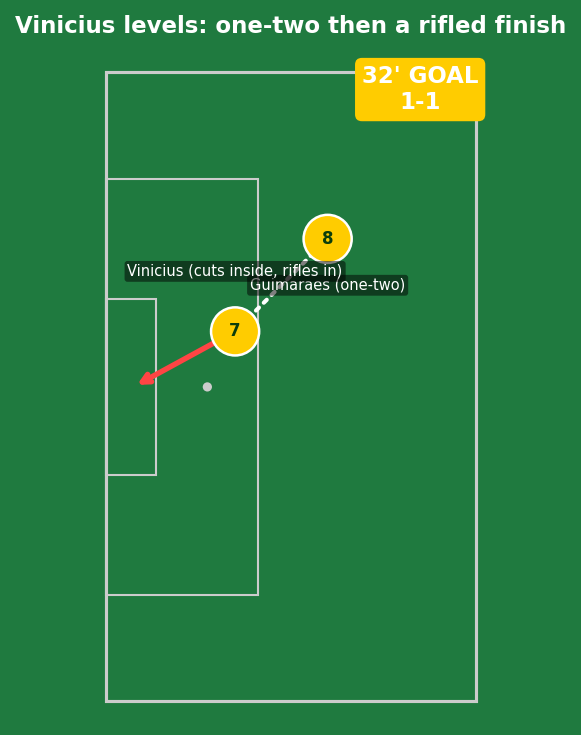
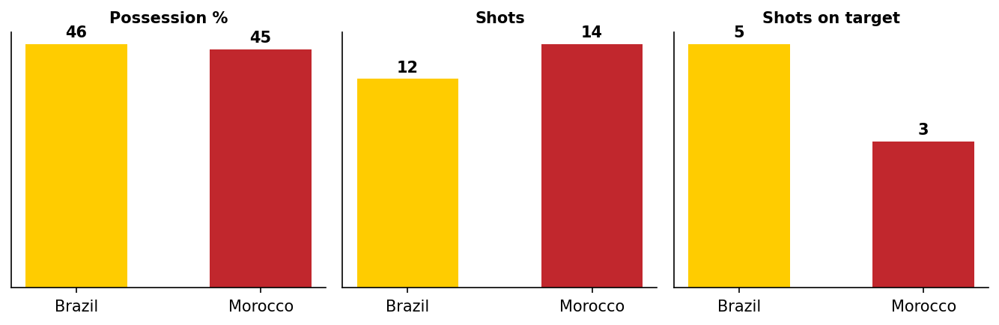
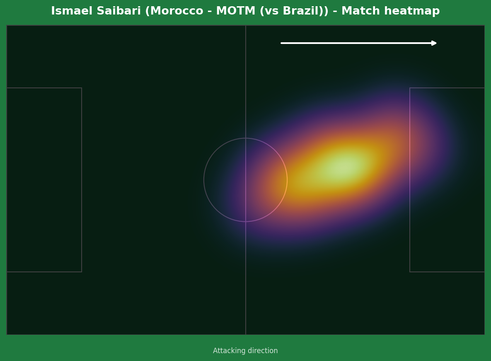
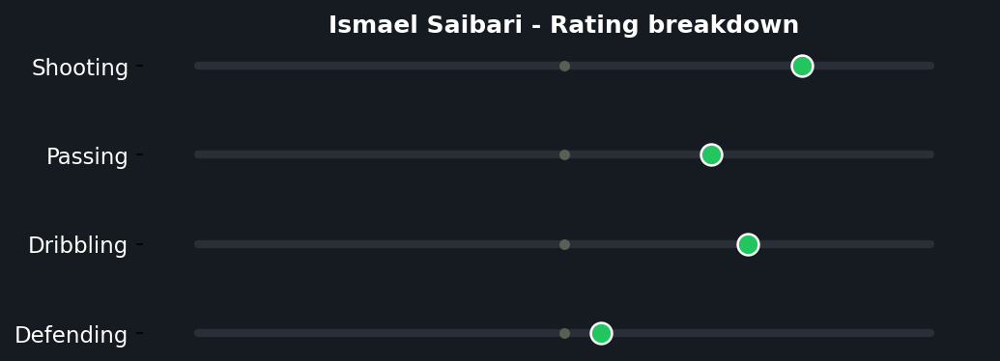
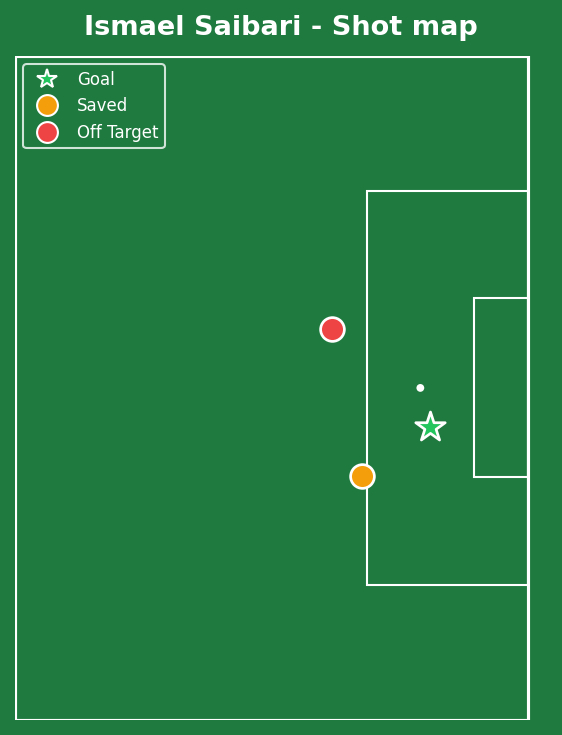

Morocco came out of the gates firing - 5 shots to Brazil's 1 in the opening 10 minutes - and were rewarded in the 21st when Saibari chipped a slow-reacting Alisson. Vinicius Junior, marking his 50th Brazil cap, leveled with a stunning individual finish 11 minutes later. The second half cooled considerably, but Morocco almost snatched a shock win in stoppage time, with Alisson forced into a brilliant double save to preserve the point.


Brazil (4-4-2): Alisson; Ibanez, Marquinhos, Gabriel, D. Santos; Raphinha, Casemiro, Guimaraes, Paqueta; Igor Thiago, Vinicius Jr. Morocco (4-2-3-1): Bounou; Hakimi, Diop, Riad, Mazraoui; El Aynaoui, Bouaddi; Diaz, El Khannouss, Ounahi; Saibari.
Morocco's start was the story of the first half-hour - their front four pressed Brazil's back line aggressively and won the ball back high repeatedly, helped by a Brazil midfield (Paqueta in particular) still finding its rhythm under a new coach in Ancelotti's first competitive match. The buildup to Saibari's goal began with exactly that kind of pressure: a loose Brazil touch in their own half, won back, and converted within seconds via Diaz's exceptional pass.
Brazil's response after going behind was built on individual quality rather than a structural fix - Vinicius simply took the game by the throat himself. The second half settled into a more even, lower-event contest, with both sides content to probe rather than overcommit, until Morocco's late surge nearly snuck a winner.
The key tactical moment: Alisson's stoppage-time double save. Without it, this analysis would be about a genuine Moroccan upset rather than a battling draw - the kind of moment that swings a tournament narrative entirely.

A goal that started with a Brazil mistake and finished with real Moroccan quality. Lucas Paqueta lost control of a short pass under modest pressure, the ball ricocheted to El Khannouss, found its way to Mazraoui, and then to Brahim Diaz in space - Diaz's through ball was the moment of genuine class, threading a pass that split Gabriel and Marquinhos perfectly. Saibari's finish required real composure too: with Alisson rushing off his line, he had to chip rather than drive his shot, and got the weight of it exactly right. Equal parts Brazilian sloppiness in the buildup and Moroccan precision in the execution.

Pure individual brilliance, with no Morocco error to point to. Vinicius exchanged a quick one-two with Guimaraes on the left, but the actual quality was everything that came after the pass back - two sharp touches to manufacture half a yard of separation from his marker, then a right-footed strike with real venom into the corner. Bounou had no real chance; this was a goal created by a single player deciding to take responsibility, not a Morocco structural lapse.

Morocco actually out-shot Brazil 14-12 and matched them almost possession-for-possession (45% to 46%) - a genuinely even contest by the numbers, not a one-sided Brazil performance that Morocco happened to equalize against.



100 pressures applied in a single match equals the most by any player across the entire tournament so far (level with Paraguay's Andres Cubas) - a genuinely elite work-rate number that explains why Morocco's press felt so suffocating in that opening half-hour. His actual goal output (1 goal from 0.35 xG) is almost beside the point compared to the volume of defensive disruption he created; this was a complete two-way performance from a player still building his senior international reputation, not just a poacher's finish.
Illustrative reconstruction based on known event locations, not raw GPS tracking data.
Alisson - 8.0 (stoppage-time double save)
Vinicius Jr - 8.5 (stunning equalizer, 50th cap)
Paqueta - 5.5 (turnover led to goal)
Guimaraes - 6.5 (tidy, part of the equalizer)
Saibari - 8.5 ⭐ MOTM (goal, 100 pressures)
Diaz - 7.5 (the pass that created the opener)
Bounou - 6.0 (beaten by real quality)
Bouaddi - 7.0 (composed senior debut at 18)
Next: Brazil face Haiti in Philadelphia. Morocco face Scotland in Boston.